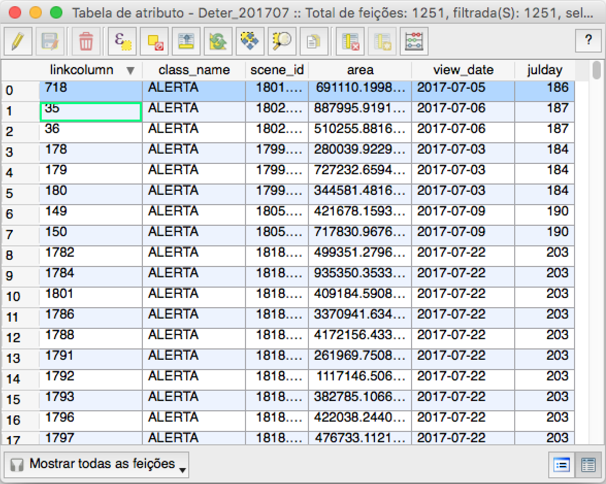
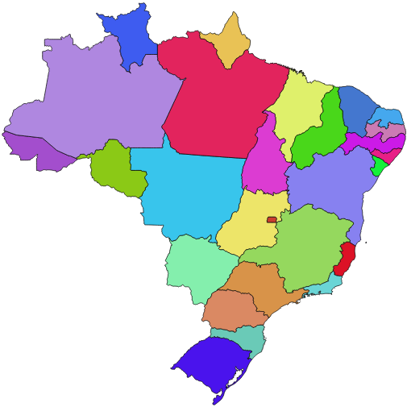
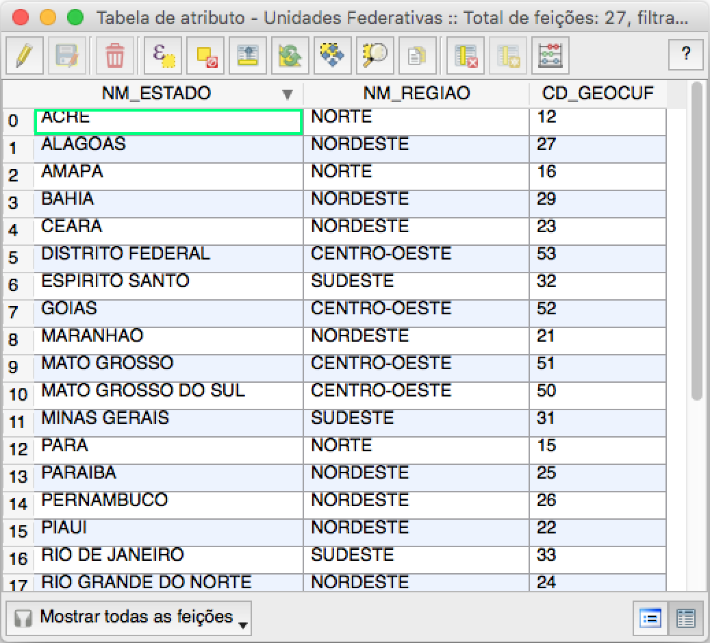

9.2. Leitura e Escrita de Dados Vetoriais com a biblioteca Fiona¶
Aviso
Essa nota de aula pressupõe que você esteja usando o código dentro do ambiente Jupyter Notebook.
9.2.1. Instalando a biblioteca Fiona¶
Para instalar a Fiona, ative seu ambiente de trabalho da Anaconda e instale o pacote através do conda:
conda activate geospatial
conda install fiona
Nota
No meu ambiente, foi instalada a versão 1.8.11.
9.2.2. Leitura de Dados¶
Nesta seção iremos construir um pequeno programa que irá abrir um arquivo ESRI Shapefile contendo regiões indicadas pelo sistema DETER como possíveis áreas de desmatamento, como mostrado na Tabela 9.1.
|
 |

Esse programa irá apresentar o esquema dessa coleção de feições e, em seguida, irá recuperar cada uma das feições, obtendo a data em que a região foi observada. Para cada região será computado o seu centróide.
O arquivo que usaremos se chama deter_201707.shp:
!ls -l data
Para acessar as funcionalidades da biblioteca Fiona faça a seguinte importação:
import fiona
fiona.__version__
Além disso, como iremos acessar as geometrias associadas às feições e extrair seu centróide, iremos precisar da biblioteca Shapely:
from shapely.geometry import shape
from shapely.geometry import mapping
A abertura do arquivo é realizada através da operação fiona.open.
Usaremos uma construção em Python que ainda não vimos no curso, com o uso do with, mas que basicamente associa o nome deter ao conteúdo do arquivo deter_201707.shp, introduzindo um novo escopo:
with fiona.open("data/deter/deter_201707.shp", "r") as deter:
# Número de feições
num_features = len( deter )
print( "Número de feições: {}\n". format( num_features ) )
# Sistema de Referência Espacial
crs = deter.crs
print( "CRS: {}\n".format(crs) )
# Extensão da coleção de feições
mbr = deter.bounds
print( "xmin: {}, xmax: {}".format(mbr[0], mbr[2]) )
print( "ymin: {}, ymax: {}\n".format(mbr[1], mbr[3]) )
# Esquema das feições
for k, v in deter.schema["properties"].items():
print( "Atributo: {}, Tipo: {}".format(k, v) )
print("\nTipo do atributo geométrico: {}\n". format(deter.schema["geometry"]) )
# Acessando cada uma das feições
for feature in deter:
# obtendo a geometria associada a feição
geom = shape( feature["geometry"] )
# obtendo o atributo de data associado a feição
view_date = feature["properties"]["view_date"]
# computando o centróide da geometria recuperada
centroide = geom.centroid
print( "view_date: {}, Localização: {}".format(view_date, centroide.wkt) )
9.2.3. Escrita de Dados¶
Nesta seção iremos utilizar o mapa das unidades federativas brasileiras disponibilizado pelo IBGE, mostrado na Tabela 9.2.
 |
 |
O objetivo dessa seção é criar um pequeno programa que leia as feições das unidades federativas, contidas no arquivo BRUFE250GC_SIR.shp, e para cada feição desse arquivo calcule o seu centróide, gravando em um arquivo de saída denominado centroide.shp.
Para escrever em uma arquivo com a Fiona, precisamos definir:
O driver que usaremos para escrita, que nesse caso será um driver capaz de escrever a coleção de feições no formato
ESRI Shapefile. A string com o tipo de driver deverá ter o valorESRI Shapefile.O sistema de referência espacial dos dados (
CRS) será o mesmo do dado de entrada.A estrutura dos dados, isto é, o esquema das feições será parecido com a da coleção de entrada, com exceção do tipo geométrico, que será representado por um ponto (o centróide da região da UF).
O manual da biblioteca
Fionapossui todas essas informações. No entanto, uma forma simples de descobrir todas essas informações consiste em abrir o arquivo de entrada e salvar esses valores em algumas variáveis, como no trecho de código abaixo:
with fiona.open('data/uf-2018/BRUFE250GC_SIR.shp', 'r') as uf:
source_driver = uf.driver
source_crs = uf.crs
source_schema = uf.schema
No código acima gravamos o valor da string que contém o nome do driver usado para codificação dos dados:
source_driver
Gravamos também o sistema de referência espacial dos dados de entrada:
source_crs
E, por último, o esquema dos dados de entrada:
source_schema
que estão mantidos em um dicionário:
type(source_schema)
A partir do esquema original, podemos criar um novo objeto para o novo esquema:
new_schema = dict(source_schema)
Nosso novo esquema terá uma componente espacial cuja represnetação será um ponto:
new_schema["geometry"] = "Point"
new_schema
Agora estamos prontos para construir o programa final dessa seção:
with fiona.open("data/centroide.shp", "w",
driver=source_driver,
crs=source_crs,
schema=new_schema) as centroides:
with fiona.open("data/uf-2018/BRUFE250GC_SIR.shp", "r") as uf:
for feature in uf:
geom = shape( feature["geometry"] )
centroide = geom.centroid
feature["geometry"] = mapping(centroide)
centroides.write(feature)